S01E02: 开发环境搭建
- 直接去 developer.android.com/sdk/ 下载bundle解压即可, 里面包含eclipse
- 新建一个模拟器: 内部存储一般64MB足矣:
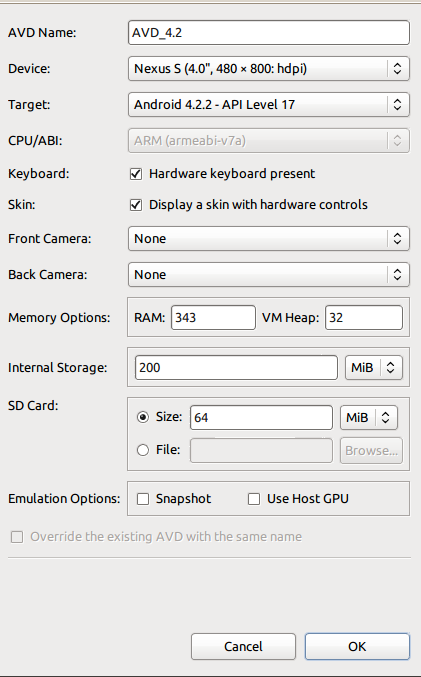
S01E03: android项目目录结构
第一个android程序
new-->android application
目录结构
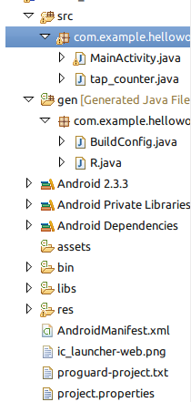
- com.example.helloworld这个包名一般为网址倒着写, android是按照包名来区分不同APP的
- src/目录下存放java程序
- gen/目录下存放系统自动生成的文件, R.java里给每一个控件或变量赋予一个id, 千万__不要手动修改R,.java内容__!!
- assets/目录下和res/目录下都可以放各种外部文件(ex. 图片), 但是assets下的文件不会在R.java中生成id
- res/layout/ 存放布局文件(xml格式)
- AndroidManifest.xml用于统筹
S01E04: 技术结构
四层结构图
开发位于最上层application 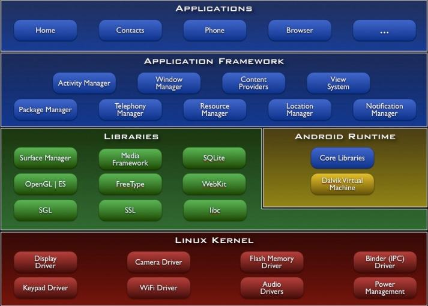
基于组件的应用程序开发
搭积木
常见组件
- activity(负责用户交互);
- service(后台处理数据);
- Content Provider(对外提供数据);
- BroadcastReceiver(接收broadcast)
S01E05: activity初步
Activity启动基本流程
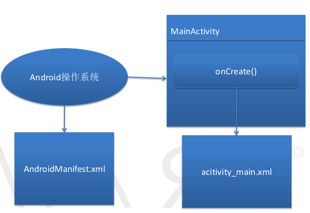
- AndroidManifest.xml里面指定, 程序运行后执行MainActivity.java
- MainActivity.java的onCreate()函数里setContentView(R.layout.activity_main); 读取activity_main.xml文件并显示
Activity与布局文件
一一对应 (eclipse编辑器里有图形化预览界面)
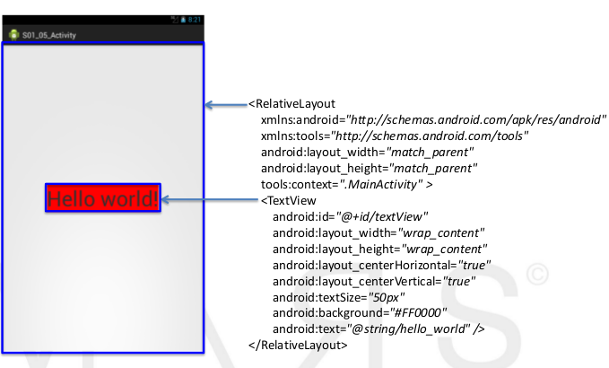
在Activity当中获取代表控件对象
-
首先在activity_main.xml里定义控件时, 为其指定一个id:
android:id="@+id/textView1" ("+id"表示新建一个id) -
→ 自动在R.java里生成一个id:
public static final class id { public static final int textView1=0x7f080003; }
-
→ 之后在MainActivity.java里, 先声明成员变量:
private TextView tv
-
→ 在onCreate()中, 通过id获得这个控件对象:
tv = (TextView) findViewById(R.id.textView1);//有向下转型: TextView是View的子类 -
→ 之后就可以调用tv的各种方法了,具体见SDK里的文档i(android.widget.TextView), 从而实现再java程序里动态修改控件属性.
S01E06: View
View的基本概念
View是一个控件?...
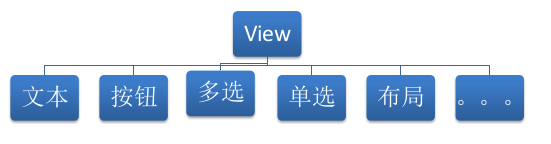
为一个View绑定监听器
(我就认为View是一个控件了)
-
java程序里获取控件代表的对象: findViewById()方法
bt = (Button) findViewById(R.id.button1); -
定义一个内部类 实现监听器接口:
// **使用一个内部类定义监听器** // Button的监听器 实现OnClickListener接口, OnClickListener接口是处理点击事件的 class ButtonListener implements OnClickListener { @Override // 实现该接口的抽象方法onClick public void onClick(View v) { //do something...... } }// end 内部类ButtonListener
-
onCreate()里生成一个监听器对象, 并为控件绑定该监听器
ButtonListener bl = new ButtonListener();// 生成一个监听器对象 bt.setOnClickListener(bl);// **这句话把监听器和事件联系在一起了** 点击这个按钮 就会执行它的onclick方法
-
一个监听器可以绑定给多个控件
- 另法
可以直接写在setOnClickListener参数里, 不用给内部类起名字:
bt.setOnClickListener(new OnClickListener() {
@Override
public void onClick(View v) {
//do something......
}
});
S01E07: 布局
- 所谓的控件布局方法,就是指控制控件在Activity当中的位置、大小、颜色以及其他控件样式属性的方法。
- 布局可以用xml布局文件(ex. /res/layout/activity_main.xml) 也可以在java文件里完成控件布局
- 最常用: 线性布局LinearLayout, 相对布局RelativeLayout
- 先暂时用线性布局LinearLayout, 最简单
S01E08: 距离单位; 边距
距离单位: px, dp, sp
- px=像素点
使用px指定控件大小, 则不同分辨率手机显示结果不同, 非常麻烦.
- dpi计算公式:
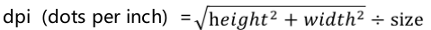
- dp=dip(Device Independent pixels) 是设备无关的像素单位
换算公式px = dp * (dpi / 160)
在320*480的屏幕上, dp与px相等
总之一般指定控件大小就用dp
- sp=scaled pixels 可改变大小的像素单位
当用户修改手机显示字体时,sp会随之改变
sp单位通常用于指定字体的大小
内外边距: margin, padding
- margin: 控件离其他控件的距离
- padding: 控件内容离控件边框的距离
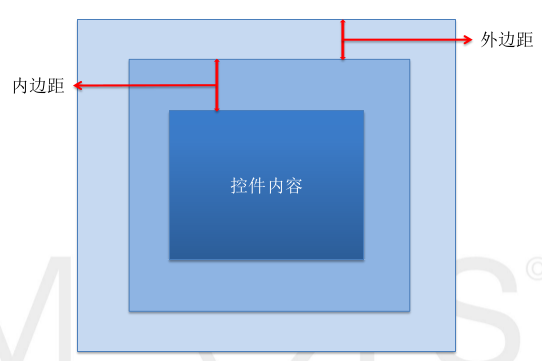
- 设置内边距与外边距:
layout_margin, layout_marginTop, ... padding, paddingTop, ...
S01E09: CheckBox多选框
效果: 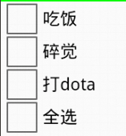
- 布局文件里使用
标签 - OnClickListener与OnCheckedChangeListener监听器
注意 这俩监听器是有一定区别的, OnClickListener必须是用户点击才能触发, OnCheckedChangeListener则是只要状态改变了(即使是由程序里改变的)就会触发
- 可以几个CheckBox绑定上同一个监听器
- OnClickListener接口的方法: public void onClick(View v) 有一个参数View v, 指的是是哪个控件被点击了,
在onClick()中要处理这个控件时, 使用:CheckBox cb = (CheckBox) v;
得到这个控件对象, 或者通过其id: v.getId()也可以
S01E10: 单选框RadioButton
效果:
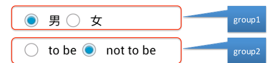
RadioGroup
单选按钮RadioButton需要放在一个RadioGroup中
xml代码:
<RadioGroup
android:id="@+id/radioGroupId"
android:layout_width="0dp"
android:layout_height="wrap_content"
android:layout_gravity="center"
android:orientation="vertical"
android:layout_weight="1">
<RadioButton
android:id="@+id/radioButton_h"
android:layout_width="wrap_content"
android:layout_height="wrap_content"
android:text="homme" />
<RadioButton
android:id="@+id/radioButton_f"
android:layout_width="wrap_content"
android:layout_height="wrap_content"
android:text="femmee" />
</RadioGroup>
<!-- 像RadioGroup这样写的xml标签可以拥有子标签, 而像RadioButton这种则不能 →
RadioGroup的OnCheckedChangeListener
有俩参数... (RadioGroup group, int checkedId)
直接上代码吧:
class RadioGroupListener implements
android.widget.RadioGroup.OnCheckedChangeListener {
@Override
// 注意看这俩参数!
public void onCheckedChanged(RadioGroup group, int checkedId) {// checkedId是被选择的哪个RadioButton的Id (而不是什么序号)
if (checkedId == R.id.radioButton_h)// 用两种方法得到想要的id: 1. 使用R中定义的
{
tv3.setText("Homme!");
rb_h2.setChecked(true);
} else if (checkedId == rb_f.getId())// 2. 使用getid()方法
{
tv3.setText("Femme!");
rb_f2.setChecked(true);
}
}
}
S01E11: 显示图片ImageView
插图的方法
- 把图片放在./res/drawable 里面(有好几个分辨率的drawable, 随便一个...), ex. 放在了./res/drawable-hdpi/pic.jpg
- → 会在R.java里生成其
id: pic - 在xml中使用
标签
引用放好的图:
android:src="@drawable/pic"
ScaleType
ScaleType属性控制图片缩放的尺寸, 有几个可选:
- fitcenter等比例缩放并居中显示;
- fitstart靠上显示;
- center 若图片较大则把中央部分截取出来显示,不缩放若图片小则直接居中显示, 也不缩放
- centerCrop 缩放并进行裁剪以适应ImiageView
- centerInside 要是图片大就缩放放进去, 图片小就不缩放直接放进去
- Fit_XY缩放成和ImageView一样大
代码片段:
<ImageView
android:id="@+id/imageView1Id"
android:layout_width="60dp"
android:layout_height="70dp"
android:background="#FF0000"
android:scaleType="fitCenter"
android:layout_weight="1"
android:src="@drawable/pic" />
<!-- "@drawable/pic"是对应于R.drawable.pic, 实际上图片也可以放在assets文件夹 或者网络上 或者SD卡上 都可以, 不过以后再用 -->
S01E12: 线性布局深入
线性布局嵌套
- 在LinearLayout里面再加入LinearLayout
- "直接父/子控件"
- 嵌套层数没有限制
layout_weight
- 子控件并未占满父控件的所有空间时才有用
- layout_weight的值用于指定空闲空间的分配__比例__: weight都是1的话--是按比例平分父控件的__剩余(!!!)__空间, 而不是整个父控件被按比例分配!
- 如果想让父控件按比例分配: 很简单, __把宽度改为0dp__即可(那么父控件剩余空间=父控件总空间!)
- 使用了线性布局嵌套以及weight属性, 已经可以制作一些相对较复杂的布局了
S01E13: 相对布局-I
相对布局def
- 相对布局是通过指定当前控件__与兄弟控件或者是父控件之间的相对位置__,从而达到控制控件位置的目的
- 实现同样界面, 用相对布局比用线性布局简单--UI性能更好些
- UI性能: 布局嵌套越多, 性能越差!!...
基本思路
- 未指定位置时: 默认往左上角放(可能会重叠!)
- 可以先放一个控件, 然后第二个控件指定其相对位置
实现方法
- android:layout_below/layout_above等等等等... 放置在其左(右)边; 属性的值都是其他控件的id
- android:id="@+id/tvv1"是创建一个新id; android:layout_toRightOf="@id/tvv1"则是引用已有的id(没有加号)
- android:layout_alignLeft/Right等等等等..... 左(右)对齐; 属性的值都是其他控件的id
S01E14: 相对布局II
对齐到基准线
- 基准线:为了保证印刷字母的整齐而划定的线
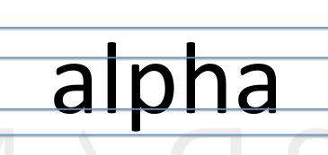
第三条线就是所谓的基准线(baseline)
- ex. 两个TextView__的基准线__相互对齐
- 作用: 当俩TextView的字体大小不相同时...
看图:
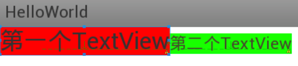
和父控件对齐
- android:layout_alignParentLeft/Right等等... 属性的值为true/false(因为只有一个直接父控件)
- android:layout_centerInParent/layout_centerHorizontal等等...
S01E15: 相对布局III
RelativeLayout布局的新属性(Android 4.2)
- android:layout_alignStart/End等 值是其他控件的id, 头部和尾部对齐
- android:layout_alignParentStart/End, 值是true/false
相对布局小练习
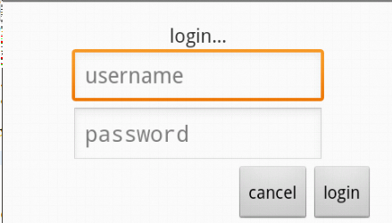
代码片段:
<RelativeLayout
android:id="@+id/RL0"
android:layout_width="fill_parent"
android:layout_height="fill_parent" >
<TextView
android:id="@+id/tv1"
android:layout_width="wrap_content"
android:layout_height="wrap_content"
android:layout_centerHorizontal="true"
android:gravity="center"
android:text="login..."
android:textSize="16sp" />
<EditText
android:id="@+id/editText1"
android:layout_width="wrap_content"
android:layout_height="wrap_content"
android:layout_below="@id/tv1"
android:layout_centerHorizontal="true"
android:ems="10"
android:hint="username" >
<requestFocus />
</EditText>
<EditText
android:id="@+id/editText2"
android:layout_width="wrap_content"
android:layout_height="wrap_content"
android:layout_below="@id/editText1"
android:layout_centerHorizontal="true"
android:ems="10"
android:hint="password"
android:inputType="textPassword" />
<Button
android:id="@+id/button1"
android:layout_width="wrap_content"
android:layout_height="wrap_content"
android:layout_alignParentRight="true"
android:layout_below="@+id/editText2"
android:text="login" />
<Button
android:id="@+id/button2"
android:layout_width="wrap_content"
android:layout_height="wrap_content"
android:layout_below="@+id/editText2"
android:layout_toLeftOf="@+id/button1"
android:text="cancel" [/>](file:///%3E)
</RelativeLayout>
S01E16: 时间和日期 TimePicker/DatePicker
标签 - 文档: android.widget.TimePicker/android.widget.DatePicker
- OnTimeChangedListener的onTimeChanged函数: public void onTimeChanged(TimePicker view, int hourOfDay, int minute) 仨参数
- getCurrentHour(); getCurrentMinute(); getMonth(); getDayOfMonth()等函数, 同理有set函数......
- 注意月份是从零算起!!
- setIs24HourView() 切换24小时显示
S01E17: 进度条ProgressBar
各种进度条
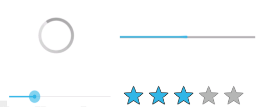
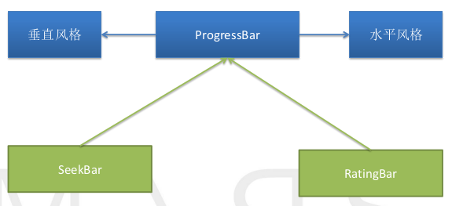
进度条的属性
- 风格Style: 转圈圈: 垂直风格(默认); 一条线的进度条: Horizontal
- 最大值: max
- 当前进度:progress
- 次要进度的值:SecondaryProgress (ex.次要进度: 解压缩文件时, 在线看视频时...)
- isIndeterminate()断进度条时不时不明确的(打酱油的, 比如转圈圈), 同理有set方法, 不过只能对水平风格适用.
S01E18: SeekBar和RatingBar
SeekBar
- 属性: max/progress/
- 监听器接口OnSeekBarChangeListener有三个函数要重写:
class SeekBarListener implements OnSeekBarChangeListener{ /** * seekBar 该对象指的是触发了监听器的SeekBar对象 * progress 指的是当前SeekBar的进度 * fromUser 指是不是用户手动改变的进度 */ @Override public void onProgressChanged(SeekBar SeekBar, int progress, boolean fromUser) { System.out.println("progress:" + progress + ",fromUser:" + fromUser); } @Override public void onStartTrackingTouch(SeekBar seekBar) { System.out.println("onStart"); } @Override public void onStopTrackingTouch(SeekBar seekBar) { System.out.println("onStop"); } }
RatingBar
- 属性: numStars(星星个数), progress, stepSize(步进)
- 监听器代码:
class RatingBarListener implements OnRatingBarChangeListener{ @Override public void onRatingChanged(RatingBar ratingBar, float rating, boolean fromUser) { System.out.println("rating:" + rating + ",fromUser:" + fromUser); }
Disqus 留言